La Capitale Spirituelle
Fès
Berceau de la civilisation marocaine, gardienne de la plus ancienne médina vivante au monde
Berceau de la civilisation marocaine, gardienne de la plus ancienne médina vivante au monde
Fondée en 789 par Idriss Ier puis agrandie par son fils Idriss II, Fès est considérée comme la capitale spirituelle, culturelle et intellectuelle du Maroc. Première des quatre villes impériales, elle a vu naître la dynastie idrisside puis prospérer sous les Almoravides, les Mérinides et les Saadiens.
Sa médina, Fès el-Bali, classée au patrimoine mondial de l'UNESCO depuis 1981, est l'une des plus grandes zones piétonnes urbaines du monde. Ses 9 000 ruelles labyrinthiques abritent l'université Al Quaraouiyine — fondée en 859 par Fatima al-Fihri, c'est la plus ancienne université encore en activité, attestée par le Guinness et l'UNESCO.
Ville d'artisans par excellence, Fès vit encore au rythme des dinandiers, des teinturiers, des tanneurs et des céramistes. La célèbre tannerie Chouara, avec ses cuves colorées vues depuis les terrasses des marchands de cuir, reste l'image-emblème d'un savoir-faire transmis depuis le Moyen-Âge.
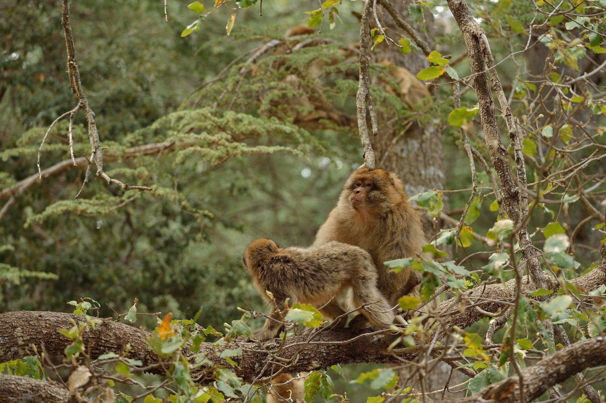
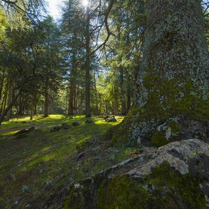
Classée à l'UNESCO et fondée au IXe siècle, c'est la plus grande zone piétonne médiévale au monde. 9 000 ruelles, 350 mosquées et un labyrinthe vivant qui n'a pas changé depuis mille ans.
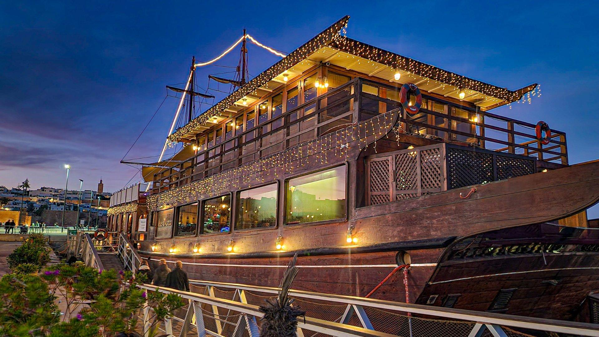
Fondée en 859 par Fatima al-Fihri, c'est la plus ancienne université encore en activité au monde. Sa bibliothèque conserve plus de 4 000 manuscrits, dont certains datent du IXe siècle.
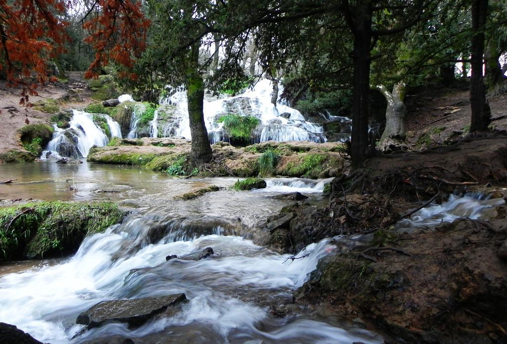
Cuves colorées en activité depuis le XIe siècle où l'on teint encore le cuir selon les méthodes ancestrales. Observation depuis les terrasses des marchands — un brin de menthe sous le nez aide à supporter l'odeur.
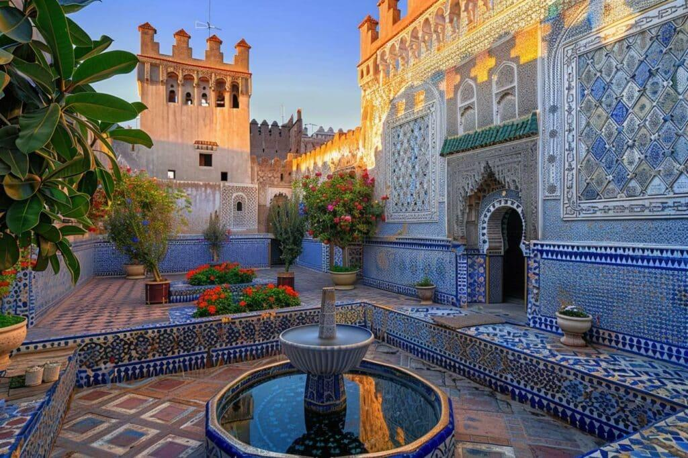
Chef-d'œuvre de l'architecture mérinide du XIVe siècle. Ses zelliges, ses stucs ciselés et son plafond en bois de cèdre sculpté en font l'une des plus belles médersas du Maroc.
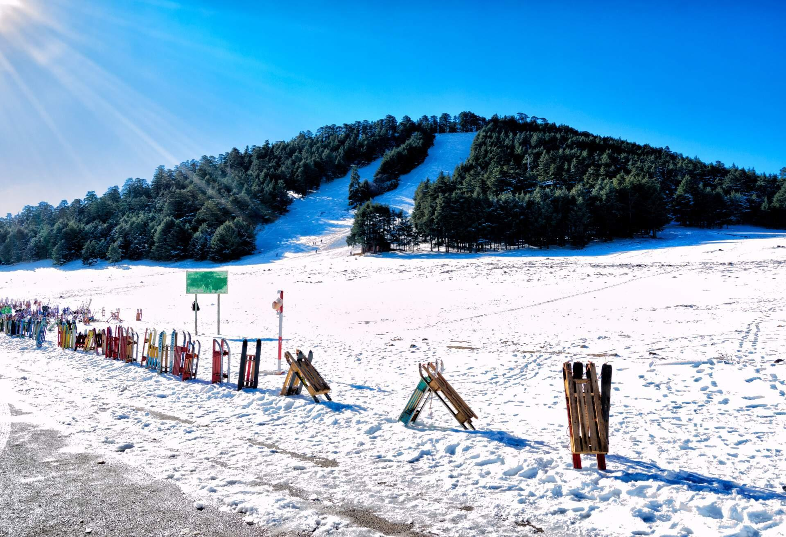
Porte monumentale bleue et verte, principale entrée de la médina depuis 1913. Côté médina, elle est ornée de zelliges verts ; côté ville nouvelle, de zelliges bleus — le bleu de Fès.
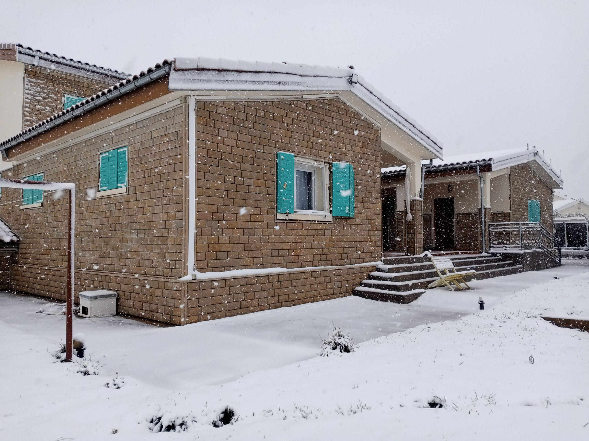
Les sept portes monumentales en bronze du Palais Royal ouvrent sur Fès Jdid. À côté, l'ancien quartier juif (Mellah) conserve ses balcons en bois ouvragé et son cimetière historique.
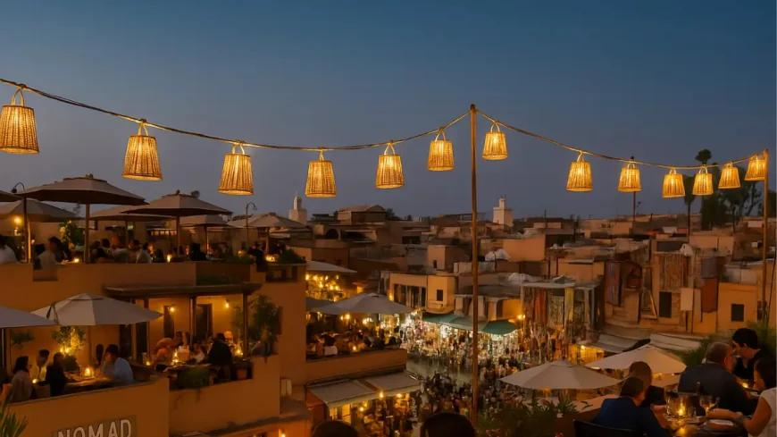
Riad-restaurant raffiné dans la médina. Cuisine marocaine moderne par un chef formé en France, dans un cadre intime aux zelliges anciens.
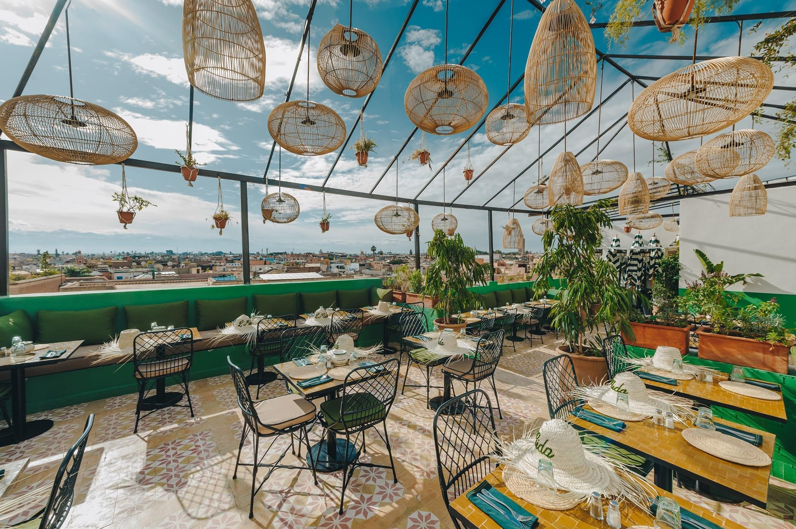
Table d'auteur installée dans une maison de la médina. Menu unique du chef invité, renouvelé chaque saison, accord parfait avec les vins marocains.
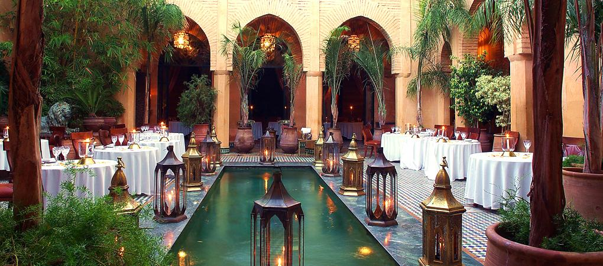
Institution culturelle autant que restaurant. Le fameux camel burger, les soirées contes berbères et les cours de cuisine en font un passage obligé.
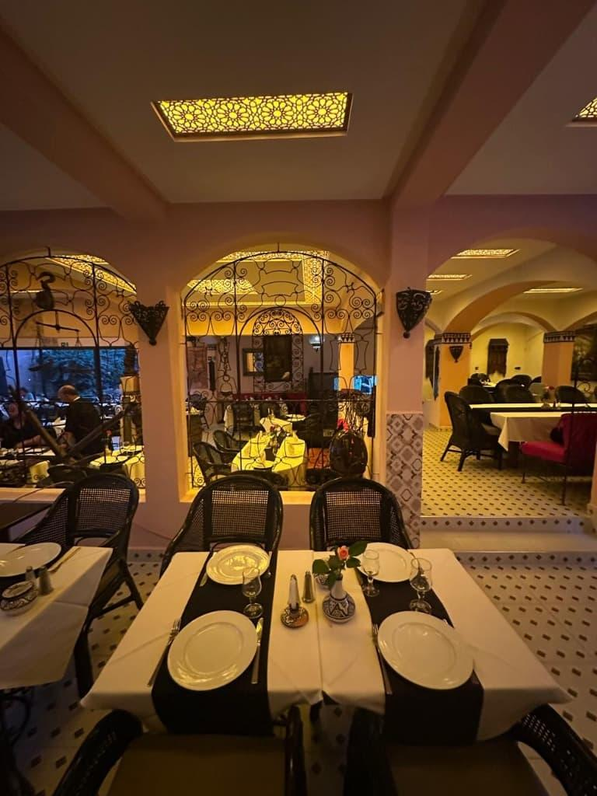
Dans le jardin d'une demeure en ruines magnifiquement préservée, on déguste tagines lents et mezzés marocains, à l'ombre des bougainvilliers centenaires.
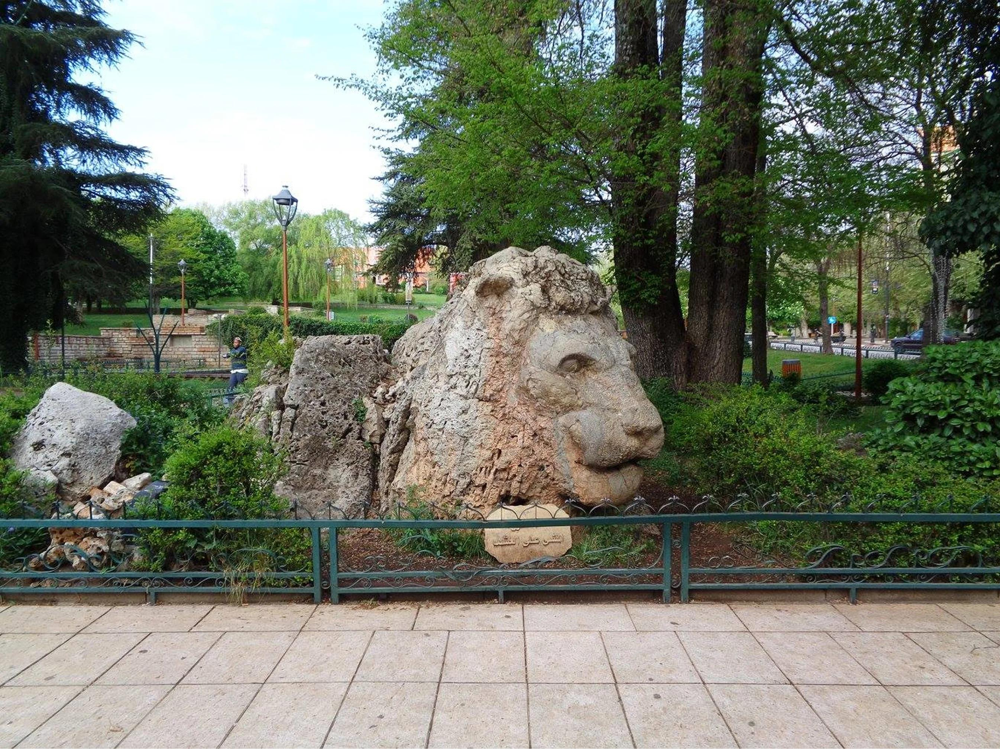
Relais & Châteaux installé dans plusieurs demeures andalouses fusionnées. Patios, piscine intérieure et spa hammam — le luxe au cœur de la médina.
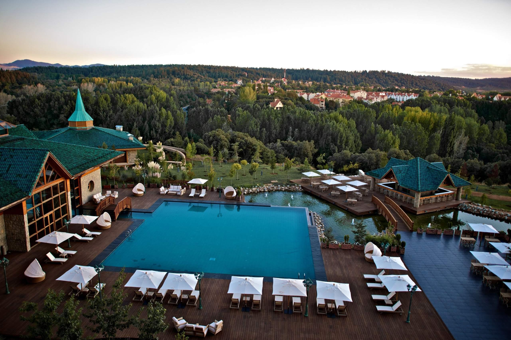
Palais du XIXe siècle restauré avec splendeur, perché en surplomb de la médina. Vue plongeante sur la cité depuis le toit-terrasse et son restaurant gastronomique.
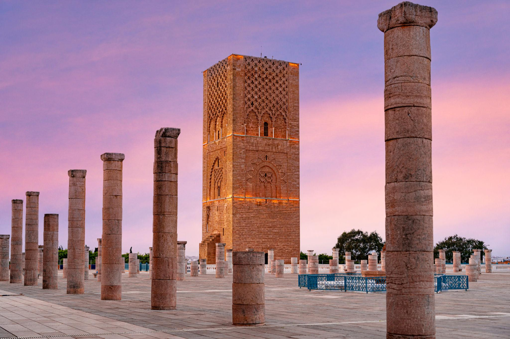
Riad familial intimiste au cœur de Fès el-Bali. Petit-déjeuner traditionnel servi sous l'oranger du patio, accueil chaleureux et conseils précieux des hôtes.
Avec ses 9 000 ruelles, la médina de Fès défie tous les GPS. Un guide local est précieux pour la première journée — au-delà, accepter de se perdre fait partie de l'expérience.
Acceptez le brin de menthe offert à l'entrée des terrasses de la tannerie Chouara : l'odeur du tannage à l'ancienne est intense, surtout en été.
Mosquées et zaouïas sont strictement réservées aux fidèles musulmans. On peut néanmoins admirer les portails ouvragés et les médersas, ouvertes à toutes et tous.
Dans les souks de Fès, la négociation est intense. Les premiers prix annoncés sont souvent 3 à 4 fois supérieurs à la valeur réelle. Restez courtois et souriant.
La médina est une zone 100 % piétonne. Marchandises et bagages y sont transportés à dos d'âne ou de mulet — gardez l'œil et l'oreille attentive en marchant.
Fès est la capitale incontestée de la céramique bleue, du cuir tanné à l'ancienne et de la dinanderie. Les ateliers du quartier As-Seffarine valent à eux seuls le détour.
Fès vous attend avec sa médina millénaire, ses tanneries colorées et ses ateliers d'artisans. Préparez votre immersion au cœur de la capitale spirituelle du Maroc.